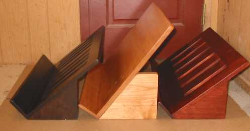
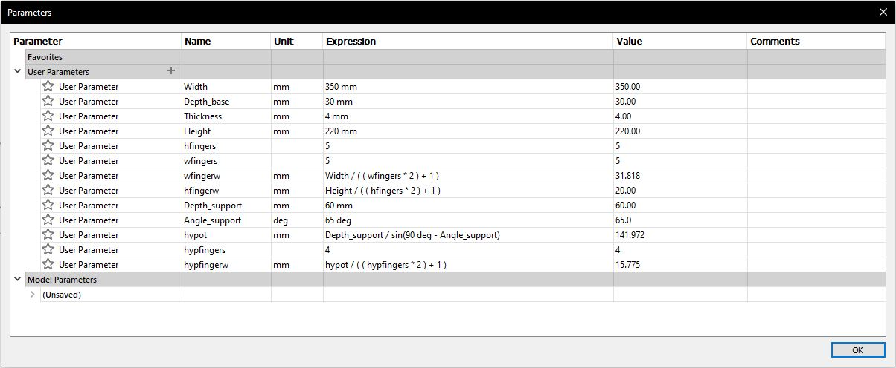

Computer-aided design and cutting
Parametric Design
To begin with, I decided to make a bookstand (lectern) for textbooks so that I can read them without having to lean over them and so that they take up less workspace. This should result in decreased strain on my neck and hopefully improve sleep quality somewhat. I will be using the model displayed in the following picture for reference (found on this website). It is a relatively simple construction, comprised of only 4 parts, but it is a thing I had been meaning to purchase and will be beneficial for me.
Preparation
As I have some experience with CAD modelling with Fusion 360 I felt that a short instruction video on parametric modelling would suffice as preparation for the technical part so I watched this video provided by Hafliði on the course webpage.
In order to get a better overview of the benefits and capabilities of laser cutting I watched two pre-recorded lectures from Neil Gershenfeld also provided on the course website. To maximize productivity I downloaded them in video format and set the playback speed to 1.5x. In the former lecture various CAD tools and their basic functions were showcased but I had decided to use Fusion 360 so that information was of limited use. In the latter lecture some fundamentals of laser cutting were covered and safety concerns adressed.
Modelling
In order to familiarize myself with parametric modelling in Fusion 360 thisvideo was of great use. I started with defining the parameters to be used on the bottom- and back panels as well as for the support pieces.
I then sketched the bottom panel and adjusted the parameters as to accommodate a typical engineering textbook and extruded it with a thickness parameter set to 4 mm. The fingers were then drawn using the rectangular pattern tool and distributed evenly on the bottom edge. The bottom panel was made similarly and slots for the fingers of a support piece cut on the back panel which were then mirrored around an offset plane.